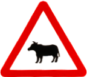

<!DOCTYPE html>
<html>

<head>
    <meta name="viewport" content="initial-scale=1.0, width=device-width" />
    <meta http-equiv="Content-Type" content="text/html; charset=utf-8">
    <link rel="stylesheet" href="https://unpkg.com/leaflet@1.6.0/dist/leaflet.css"
        integrity="sha512-xwE/Az9zrjBIphAcBb3F6JVqxf46+CDLwfLMHloNu6KEQCAWi6HcDUbeOfBIptF7tcCzusKFjFw2yuvEpDL9wQ=="
        crossorigin="" />
    <script src="https://unpkg.com/leaflet@1.6.0/dist/leaflet.js"
        integrity="sha512-gZwIG9x3wUXg2hdXF6+rVkLF/0Vi9U8D2Ntg4Ga5I5BZpVkVxlJWbSQtXPSiUTtC0TjtGOmxa1AJPuV0CPthew=="
        crossorigin=""></script>
    <script src="https://code.jquery.com/jquery-3.4.0.min.js"
        integrity="sha256-BJeo0qm959uMBGb65z40ejJYGSgR7REI4+CW1fNKwOg=" crossorigin="anonymous"></script>
    <!-- <script src='https://npmcdn.com/@turf/turf/turf.min.js'></script>
    <script src="./scripts/alertifyjs/alertify.min.js"></script>
    <script src="./scripts/leaflet.spin.min.js"></script>
    <script src="./scripts/spin.min.js"></script>
    <link rel="stylesheet" href="./scripts/alertifyjs/css/alertify.min.css" />
    <link rel="stylesheet" href="./scripts/alertifyjs/css/themes/default.min.css" /> -->
    <style>
        html,
        body {
            padding: 0;
            margin: 0;
        }

        html,
        body,
        #map {
            width: 100vw;
            height: 100%;
            position: relative;
        }
    </style>
</head>

<body>
    <div id="map" class="map">
        <script type="text/javascript" charset="UTF-8">
            const he_xyz_roadkill_token = 'AJt8bGnvRgWmUd0RppoLxQA'; // https://xyz.api.here.com/token-ui/
            const he_xyz_roadkill_hexbin_space_id = 'jlhTBkWX'; // roadkill hexgrid heatmap layer
            const he_xyz_roadkill_road_space_id = 'xVHzxzsl'; // roadkill road segment geometries
            const he_xyz_roadkill_icon_space_id = 'ppwW5xZ4'; // icon for roadkill road segments
            const he_xyz_animal_crossing_sign_space_id = '4qRA5sz4'; // icon for animal signs
            const he_xyz_roadkill_bigdata_space_id = 'DzCrr7gA'; // icon for roadkill bigdata
            const heatmap_max = 15;
            const width = screen.width;
            const height = screen.height;
            const screenRatio = screen.width / screen.height;
            const pixelRatio = window.devicePixelRatio || 1;
            const ppi = pixelRatio === 1 ? 72 : 320
            const tile_size = pixelRatio === 1 ? 256 : 512
            var road_Polyline_list = [];
            var tile_xyz_list = [];
            var heatmap_layer_loaded = false;
            var heatmap_layer_opened = false;
            const default_icon_size = pixelRatio === 1 ? 36 : 24;
            const default_icon_anchor = pixelRatio === 1 ? 18 : 12;
            const map = L.map('map', {
                maxZoom: 17,
                minZoom: 6
            });
            map.on('load', function () {
                tile_xyz_list = get_tile_xyz(map.getBounds(), map.getZoom());
            });
            map.setView({
                lat: 23.749408835677244,
                lng: 121.00495296263927
            }, 8);
            // const taiwan_boundary = $.getJSON('https://aquawill.github.io/taiwan_roadkill_map/assets/twn_simplified.geojson', function (value) {
            //     L.geoJSON(value, {
            //         style: {
            //             color: '#0032ff',
            //             opacity: 0.3,
            //             weight: 3,
            //             fill: false
            //         }
            //     }).addTo(map);
            // })

            map.on('moveend', function () {
                if (heatmap_layer_opened) {
                    load_bigdata();
                }
            });
            map.on('movestart', function () {
                tile_xyz_list = [];
                roadkill_bigdata_group.clearLayers()
            });

            const OpenStreetMap_Mapnik = L.tileLayer('https://{s}.tile.openstreetmap.org/{z}/{x}/{y}.png', {
                maxZoom: 19,
                opacity: 0.8,
                // detectRetina: true,
                attribution: '&copy; <a href="https://www.openstreetmap.org/copyright">OpenStreetMap</a> contributors'
            }).setZIndex(10).addTo(map);
            const OpenTopoMap = L.tileLayer('https://{s}.tile.opentopomap.org/{z}/{x}/{y}.png', {
                maxZoom: 17,
                // detectRetina: true,
                attribution: 'Map data: &copy; <a href="https://www.openstreetmap.org/copyright">OpenStreetMap</a> contributors, <a href="http://viewfinderpanoramas.org">SRTM</a> | Map style: &copy; <a href="https://opentopomap.org">OpenTopoMap</a> (<a href="https://creativecommons.org/licenses/by-sa/3.0/">CC-BY-SA</a>)'
            }).setZIndex(10);
            const Esri_WorldImagery = L.tileLayer(
                'https://server.arcgisonline.com/ArcGIS/rest/services/World_Imagery/MapServer/tile/{z}/{y}/{x}', {
                    attribution: 'Tiles &copy; Esri &mdash; Source: Esri, i-cubed, USDA, USGS, AEX, GeoEye, Getmapping, Aerogrid, IGN, IGP, UPR-EGP, and the GIS User Community'
                }).setZIndex(10);

            const roadkill_hotspot_group = new L.featureGroup().setZIndex(40),
                animal_sign_group = new L.featureGroup().setZIndex(30),
                roadkill_bigdata_group = new L.featureGroup().setZIndex(20);
            roadkill_hotspot_group.addTo(map);

            const attribution_layer = L.geoJson();
            attribution_layer.getAttribution = function () {
                return '&copy; <a href="https://roadkill.tw/">台灣動物路死觀察網</a>';
            };
            attribution_layer.addTo(map);
            roadkill_bigdata_group.on('add', function () {
                load_bigdata();
                heatmap_layer_opened = true;
            })
            roadkill_bigdata_group.on('remove', function () {
                heatmap_layer_opened = false;
            })

            L.control.scale().addTo(map);
            L.control.layers({
                "一般地圖": OpenStreetMap_Mapnik,
                "地形圖": OpenTopoMap,
                "衛星影像": Esri_WorldImagery,
            }, {
                ' 路殺熱點路段': roadkill_hotspot_group,
                ' 動物警告標誌': animal_sign_group,
                ' 路殺歷史大數據': roadkill_bigdata_group,
            }, {
                collapsed: false,
                hideSingleBase: true
            }).addTo(map);


            function get_tile_xyz(bounds, zoom) {
                const min = map.project(bounds.getNorthWest(), zoom).divideBy(256).floor(),
                    max = map.project(bounds.getSouthEast(), zoom).divideBy(256).floor(),
                    urls = [],
                    coords_list = [];
                for (var i = min.x; i <= max.x; i++) {
                    for (var j = min.y; j <= max.y; j++) {
                        const coords = new L.Point(i, j);
                        coords.z = zoom;
                        coords_list.push(coords);
                    }
                }
                return coords_list;
            }

            function position_locator() {
                navigator.geolocation.getCurrentPosition(function (location) {
                    const gps_location_marker = new L.circle([location.coords.latitude, location.coords
                        .longitude
                    ], 5, {
                        color: '#3388ff',
                        lineWidth: 1,
                        fillOpacity: 0.5,
                        fillColor: '#3388ff'
                    });
                    const gps_location_marker_radius = new L.circle([location.coords.latitude, location.coords
                        .longitude
                    ], location.coords.accuracy, {

                        color: 'rgb(245, 117, 249)',
                        lineWidth: 1,
                        fillOpacity: 0.5,
                        fillColor: 'rgb(250, 184, 252)'

                    });
                    gps_location_marker_radius.addTo(map);
                    gps_location_marker.addTo(map);

                    map.setView([location.coords.latitude, location.coords.longitude], 13);
                });
            }

            function getKilledIcon(type) {
                var iconName;
                switch (type) {
                    case '鳥綱':
                        iconName = 'https://aquawill.github.io/taiwan_roadkill_map/img/ic_bird_killed.svg'
                        break;
                    case '哺乳綱':
                        iconName = 'https://aquawill.github.io/taiwan_roadkill_map/img/ic_mammal_killed.svg'
                        break;
                    case '爬蟲綱':
                        iconName = 'https://aquawill.github.io/taiwan_roadkill_map/img/ic_reptile_killed.svg'
                        break;
                    case '兩生綱':
                        iconName = 'https://aquawill.github.io/taiwan_roadkill_map/img/ic_frog_killed.svg'
                        break;
                    case '軟甲綱':
                        iconName = 'https://aquawill.github.io/taiwan_roadkill_map/img/ic_crab_killed.svg'
                        break;
                    default:
                        iconName = 'https://aquawill.github.io/taiwan_roadkill_map/img/ic_unknown_killed.svg'
                        break;
                }
                return iconName
            }

            function getRoadkillRouteIcon(type, recmd_type, dayNight) {
                var iconName;
                switch (type) {
                    case '鳥類':
                        if (dayNight == '晚上') {
                            iconName = 'https://aquawill.github.io/taiwan_roadkill_map/img/ic_bird_night.svg'
                        } else {
                            iconName = 'https://aquawill.github.io/taiwan_roadkill_map/img/ic_bird_day.svg'
                        }
                        break;
                    case '哺乳類':
                        if (dayNight == '晚上') {
                            iconName = 'https://aquawill.github.io/taiwan_roadkill_map/img/ic_mammal_night.svg'
                        } else {
                            iconName = 'https://aquawill.github.io/taiwan_roadkill_map/img/ic_mammal_day.svg'
                        }
                        break;
                    case '兩生類':
                        if (dayNight == '晚上') {
                            iconName = 'https://aquawill.github.io/taiwan_roadkill_map/img/ic_frog_night.svg'
                        } else {
                            iconName = 'https://aquawill.github.io/taiwan_roadkill_map/img/ic_frog_day.svg'
                        }
                        break;
                    case '爬行類':
                        if (recmd_type == '烏龜') {
                            if (dayNight == '晚上') {
                                iconName = 'https://aquawill.github.io/taiwan_roadkill_map/img/ic_turtle_night.svg'
                            } else {
                                iconName = 'https://aquawill.github.io/taiwan_roadkill_map/img/ic_turtle_day.svg'
                            }
                        } else {
                            if (dayNight == '晚上') {
                                iconName = 'https://aquawill.github.io/taiwan_roadkill_map/img/ic_snake_night.svg'
                            } else {
                                iconName = 'https://aquawill.github.io/taiwan_roadkill_map/img/ic_snake_day.svg'
                            }
                        }
                        break;
                    case '陸蟹':
                        if (dayNight == '晚上') {
                            iconName = 'https://aquawill.github.io/taiwan_roadkill_map/img/ic_crab_night.svg'
                        } else {
                            iconName = 'https://aquawill.github.io/taiwan_roadkill_map/img/ic_crab_day.svg'
                        }
                        break;
                    case '昆蟲':
                        if (dayNight == '晚上') {
                            iconName = 'https://aquawill.github.io/taiwan_roadkill_map/img/ic_butterfly_night.svg'
                        } else {
                            iconName = 'https://aquawill.github.io/taiwan_roadkill_map/img/ic_butterfly_day.svg'
                        }
                        break;
                }
                return iconName
            }

            function line_styler(route_type) {
                var customStyle;
                switch (route_type) {
                    case '國道':
                        customStyle = {
                            color: '#e59866',
                            weight: 10,
                            dashOffset: [0, 2]
                        };
                        break;
                    case '省道':
                        customStyle = {
                            color: '#f4d03f',
                            weight: 10,
                            dashOffset: [0, 2]
                        };
                        break;
                    case '縣道':
                        customStyle = {
                            color: '#58d68d',
                            weight: 10,
                            dashOffset: [0, 2]
                        };
                        break;
                    case '鄉道':
                        customStyle = {
                            color: '#85c1e9',
                            weight: 10,
                            dashOffset: [0, 2]
                        };
                        break;
                    case '其他道路':
                        customStyle = {
                            color: '#bb8fce',
                            weight: 10,
                            dashOffset: [0, 2]
                        };
                        break;
                    case '林道':
                        customStyle = {
                            color: '#b2babb',
                            weight: 10,
                            dashOffset: [0, 2]
                        };
                        break;
                }
                return customStyle
            }

            const xyz_icon_url = 'https://xyz.api.here.com/hub/spaces/' + he_xyz_roadkill_icon_space_id +
                '/iterate?access_token=' + he_xyz_roadkill_token
            const xyz_road_url = 'https://xyz.api.here.com/hub/spaces/' + he_xyz_roadkill_road_space_id +
                '/iterate?access_token=' + he_xyz_roadkill_token
            const xyz_animal_crossing_sign_url = 'https://xyz.api.here.com/hub/spaces/' +
                he_xyz_animal_crossing_sign_space_id + '/iterate?access_token=' + he_xyz_roadkill_token
            const xyz_roadkill_bigdata_iterate_url = 'https://xyz.api.here.com/hub/spaces/' +
                he_xyz_roadkill_bigdata_space_id + '/iterate?access_token=' + he_xyz_roadkill_token + '&limit=100000'
            const xyz_roadkill_bigdata_tile_url = 'https://xyz.api.here.com/hub/spaces/' +
                he_xyz_roadkill_bigdata_space_id + '/tile/web/{z}_{x}_{y}?access_token=' + he_xyz_roadkill_token
            const xyz_roadkill_bigdata_hexbin_tile_url = 'https://xyz.api.here.com/hub/spaces/' +
                he_xyz_roadkill_hexbin_space_id + '/tile/web/{z}_{x}_{y}?access_token=' + he_xyz_roadkill_token

            const grid_style = {
                style: function style(feature) {
                    return {
                        fillColor: '#ff0000',
                        stroke: false,
                        fillOpacity: feature.properties.count > 0 ? (Math.log10(feature.properties.count) /
                            10) * 0.8 : 0
                        // fillOpacity: feature.properties.occupancy * 0.6
                    };
                }
            }

            function load_bigdata() {
                roadkill_bigdata_group.clearLayers();
                const map_bounds = map.getBounds().pad(0.05);
                const map_south_west = map_bounds.getSouthWest();
                const map_north_east = map_bounds.getNorthEast();
                const map_horizontal_distance = map.distance(map.getBounds().getSouthWest(), map.getBounds()
                    .getSouthEast()) / 1000
                const bbox = [map_south_west.lng, map_south_west.lat, map_north_east.lng, map_north_east.lat];
                const cellSide = map_horizontal_distance / 40;
                const options = {
                    units: 'kilometers',
                    properties: {
                        density: 0
                    }
                };
                tile_xyz_list = get_tile_xyz(map.getBounds(), map.getZoom());
                if (map.getZoom() < heatmap_max) {
                    tile_xyz_list.forEach(function (item, index) {
                        $.ajax({
                            url: xyz_roadkill_bigdata_hexbin_tile_url.replace('{z}', item.z).replace(
                                '{x}', item.x).replace('{y}', item.y) + '&tags=zoom' + (item.z - 3),
                            dataType: 'json',
                            async: true,
                            success: function (value) {
                                value.features.forEach(function (item, index) {
                                    if (item.geometry.type == 'Polygon') {
                                        const bigdata_hexgrid_polygon = L.geoJSON(item,
                                            grid_style).addTo(
                                            roadkill_bigdata_group);
                                        bigdata_hexgrid_polygon.on('click', function () {
                                            map.flyToBounds(bigdata_hexgrid_polygon
                                                .getBounds());
                                        })
                                    }
                                })
                            }
                        })
                    })
                } else {
                    tile_xyz_list.forEach(function (item, index) {
                        $.ajax({
                            url: xyz_roadkill_bigdata_tile_url.replace('{z}',
                                    item.z)
                                .replace('{x}', item.x)
                                .replace('{y}', item.y),
                            dataType: 'json',
                            async: true,
                            success: function (value) {
                                const features = value.features;
                                features.forEach(function (item, index) {
                                    const geometry = item.geometry,
                                        lat = geometry.coordinates[1],
                                        lng = geometry.coordinates[0],
                                        properties = item.properties;
                                    icon_location = {
                                        lat: lat,
                                        lng: lng
                                    };
                                    const roadkill_bigdata_marker = new L.marker(
                                        icon_location, {
                                            icon: new L.icon({
                                                iconUrl: getKilledIcon(
                                                    properties.class_tw),
                                                iconSize: [default_icon_size /
                                                    2, default_icon_size /
                                                    2
                                                ],
                                                iconAnchor: [
                                                    default_icon_anchor / 2,
                                                    default_icon_anchor / 2
                                                ]
                                            })
                                        });
                                    const roadkill_marker_popup = new L.popup();
                                    roadkill_marker_popup.setLatLng(icon_location);
                                    const rk_id = properties.rk_id;
                                    const class_tw = properties.class_tw ? properties
                                        .class_tw : '未知';
                                    const family_tw = properties.family_tw ? properties
                                        .family_tw : '未知';
                                    const family_en = properties.family_en ? properties
                                        .family_en : 'Unknown';
                                    const location = properties.location ? properties
                                        .location : '未知';
                                    const rec_year = properties.rec_year ? properties
                                        .rec_year : '?';
                                    const rec_month = properties.rec_month ? properties
                                        .rec_month : '?';
                                    const rec_day = properties.rec_day ? properties
                                        .rec_day : '?';
                                    const verified = properties.verified ? properties
                                        .verified : '未知';
                                    roadkill_marker_popup.setContent(
                                        '<table border="1" style="font-size:14px;font-family:serif;" cellpadding="0"><tr><th colspan="2">' +
                                        rk_id + '</th></tr><tr><td>種類</td><td>' +
                                        class_tw + '</td></tr><tr><td>科</td><td>' +
                                        family_tw + '/' + family_en +
                                        '</td></tr><tr><td>地點</td><td>' +
                                        location + '</td></tr><tr><td>紀錄時間</td><td>' +
                                        properties.rec_year + '/' + rec_month + '/' +
                                        rec_day +
                                        '</td></tr><tr><td>狀況</td><td>' + verified +
                                        '</td></tr></table>');
                                    roadkill_bigdata_marker.bindPopup(
                                        roadkill_marker_popup);
                                    roadkill_bigdata_marker.addTo(
                                        roadkill_bigdata_group);
                                })
                            }
                        })
                    })
                }
            }

            function load_roadkill_route_layers() {
                $.get(xyz_icon_url, function (value) {
                    var features = value.features;
                    features.forEach(function (item, index) {
                        var geometry = item.geometry,
                            lat = geometry.coordinates[1],
                            lng = geometry.coordinates[0],
                            icon_location = {
                                lat: lat,
                                lng: lng
                            };
                        var properties = item.properties,
                            day_night = properties.day_night,
                            id = properties.id,
                            rec_type = properties.rec_type,
                            rt_desc = properties.rt_desc,
                            rt_number = properties.rt_number,
                            rt_type = properties.rt_type,
                            season = properties.season,
                            type = properties.type;
                        var roadkill_marker = new L.marker(icon_location, {
                            icon: new L.icon({
                                iconUrl: getRoadkillRouteIcon(type, rec_type,
                                    day_night),
                                iconSize: [default_icon_size, default_icon_size],
                                iconAnchor: [default_icon_anchor, default_icon_anchor]
                            })
                        });
                        var roadKillPopup = new L.popup();
                        roadKillPopup.setLatLng(icon_location);
                        roadKillPopup.setContent(
                            '<table border="1" style="font-size:14px;font-family:serif;" cellpadding="0"><tr><th colspan="2">' +
                            '路殺熱點：' + rec_type + '</th></tr><tr><td>季節</td><td>' + season +
                            '</td></tr><tr><td>時間</td><td>' + day_night +
                            '</td></tr><tr><td>路段</td><td>' + rt_desc + '</td></tr></table>');
                        roadkill_marker.bindPopup(roadKillPopup);
                        roadkill_marker.addTo(roadkill_hotspot_group);
                    })
                });
                $.get(xyz_road_url, function (value) {
                    const features = value.features;
                    features.forEach(function (item, index) {
                        const geometry = item.geometry,
                            coordinates = geometry.coordinates,
                            properties = item.properties,
                            day_night = properties.day_night,
                            id = properties.id,
                            rec_type = properties.rec_type,
                            rt_desc = properties.rt_desc,
                            rt_number = properties.rt_number,
                            rt_type = properties.rt_type,
                            season = properties.season,
                            type = properties.type,
                            road_geo_list = [];
                        for (i = 0; i < coordinates.length; i++) {
                            const coordinate = coordinates[i];
                            for (i = 0; i < coordinate.length; i++) {
                                const lat_lng_pair = coordinate[i];
                                road_geo_list.push([lat_lng_pair[1], lat_lng_pair[0]]);
                            }
                        }
                        const road_Polyline = L.polyline(road_geo_list);
                        road_Polyline.setStyle(line_styler(rt_type));
                        road_Polyline_list.push({
                            id: id,
                            geometry: road_Polyline
                        });
                        road_Polyline.addTo(roadkill_hotspot_group);
                    })
                });
            }

            function load_animal_crossing_signs() {
                const image_width = screenRatio > 1 ? '20em' : '10em';
                $.get(xyz_animal_crossing_sign_url, function (value) {
                    const features = value.features;
                    features.forEach(function (item, index) {
                        const geometry = item.geometry,
                            lat = geometry.coordinates[1],
                            lng = geometry.coordinates[0],
                            icon_location = {
                                lat: lat,
                                lng: lng
                            };
                            const properties = item.properties,
                            owner = properties.owner,
                            sn = properties.sn,
                            target_species = properties.target_species,
                            url = properties.url.split(';')[0];
                            const animal_crossing_sign_marker = new L.marker(icon_location, {
                            icon: new L.icon({
                                iconUrl: 'https://aquawill.github.io/taiwan_roadkill_map/img/enable_animal_crossing_sign.png',
                                iconSize: [default_icon_size, default_icon_size],
                                iconAnchor: [default_icon_anchor, default_icon_anchor]
                            })
                        });
                        const animalCrossingSignPopup = new L.popup({
                            maxWidth: '20em',
                            autoPan: true,
                            autoPanPadding: [10, 10]
                        });
                        animalCrossingSignPopup.setLatLng(icon_location);
                        animalCrossingSignPopup.setContent(
                            '<table border="1" style="font-size:14px;font-family:serif;" cellpadding="0"><tr><th colspan="2">當心動物標誌：' +
                            target_species + '</th></tr><tr><td></td></tr></table>');
                        animal_crossing_sign_marker.bindPopup(animalCrossingSignPopup);
                        animal_crossing_sign_marker.addTo(animal_sign_group);
                    })
                });
            }
            position_locator();
            load_roadkill_route_layers();
            load_animal_crossing_signs();
        </script>
    </div>
</body>